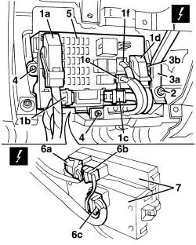

5505A35 MAIN BODY COMPUTER/JUNCTION UNIT - R.R.
- Path
- Procedures > 55 ELECTRICAL EQUIPMENT > 5505 INSTRUMENT/GAUGE ELECTRICAL CIRCUITS > 5505A MULTI-FUNCTION COMPONENTS > 5505A35 MAIN BODY COMPUTER/JUNCTION UNIT - R.R.
- Kind
- repair procedure (removal / refitting; the operation number is the code)
- Applies to
- all engines; all production periods
- Interactive page
- https://sloeber94.github.io/elrnDB/#/939010967
Applies to: all engines; all production periods
 Removing
Removing
 Refitting
RefittingOp. 7040A37 FUSE BOX COVER IN INSTRUMENT PANEL - R.R
1. Disconnect the electrical connections (1a, 1b, 1c, 1d, 1e, 1f).
2. Undo the bracket retaining bolt
3. Move dashboard trim bracket (3a) slightly aside the unscrew bolt (3b).
4. Unscrew the other bolts securing the body computer/junction unit assembly.
5. Move the body computer/junction unit slightly aside.
6. Disconnect the electrical connections (6a, 6b, 6c).
7. Recover the body computer/junction unit slightly.

Applies to: all engines; all production periods
If necessary,
If necessary,
Op. 5505A32 BODY COMPUTER - R.R
(alternative)
Applies to: all engines; all production periods
Refitting
RemovingCheck that the junction unit and body computer are undamaged.
Connect the rear electrical connections.
Position the unit and secure it using the bolts.
Connect the front electrical connections.
Position the bracket and tighten the bolt.
Use an Examiner to check that the system has not acquired errors during the operation.
Op. 7040A37 FUSE BOX COVER IN INSTRUMENT PANEL - R.R
Test the operation of the electrical system.
Topics linked from this page (2)
Topics that link to this page (210)
- K124 HEATER PLUGS WARNING LIGHT ON CONSTANTLY
- 5010B24 UNDER-FACIA AIR DUCTS - R.R.
- 5040C10 AIR CONDITIONING CASING - R.R
- 5040C50 AIR CONDITIONING HEATER RADIATOR - R.R.
- 5040C64 A/C EVAPORATOR - R+R
- 5040D80 AIR CONDITIONER SYSTEM WIRING BUNDLE - R R OR REPLACE
- 5040D86 AIR CONDITIONING RIGHT AIR MIXTURE FLAP CONTROL MOTOR - R.R
- 5040D94 AIR CONDITIONING LEFT UPPER AIR DISTRIBUTION FLAP MOTOR (DEFROST) - R.R
- 5040D96 AIR CONDITIONING RIGHT UPPER DISTRIBUTION FLAP MOTOR (DEFROST) - R.R
- 5505C28 ENGINE COMPARTMENT AND A.B.S BUILT-IN WIRING - R.R.
- 5505C31 BUILT-IN WIRING UNDER DASHBOARD - R.R.
- 5505C41 PASSENGER COMPARTMENT WIRING - R.R
- 5580C22 AIR BAG MODULE - PASSENGER SIDE - R.R
- 5580C24 PASSENGER SIDE AIR BAG MODULE SUPPORT R. R.
- 7005A14 FRONT SIDE DOOR - ADJUST CENTERING AND MOULDING - INCLUDES ADAPTATION OF HINGES AND SEALS ON DOOR COMPARTMENT
- 7005A24 FRONT SIDE DOOR HINGES (BOLTED) - R.R. WITH DOOR DETACHED
- 7040A10 DASHBOARD TRIM - R+R
- 7210A74 R R FACIA SUPPORT BEAM
- E1010 POWER SUPPLY SYSTEM - WIRING DIAGRAM
- E1010 POWER SUPPLY SYSTEM - COMPONENT LOCATION
- E1050 CAN CONNECTION LINES - WIRING DIAGRAM
- E1050 CAN CONNECTION LINES - COMPONENT LOCATION
- E1060 A-BUS SERIAL LINE - WIRING DIAGRAM
- E1060 A-BUS SERIAL LINE - COMPONENT LOCATION
- E2010 SIDE LIGHTS/NUMBER PLATE LIGHT - WIRING DIAGRAM
- E2010 SIDE LIGHTS/NUMBER PLATE LIGHT - COMPONENT LOCATION
- E2010 SIDE LIGHTS/NUMBER PLATE LIGHT - WIRING DIAGRAM
- E2010 SIDE LIGHTS/NUMBER PLATE LIGHT - COMPONENT LOCATION
- E2010 SIDE LIGHTS/NUMBER PLATE LIGHT - WIRING DIAGRAM
- E2010 SIDE LIGHTS/NUMBER PLATE LIGHT - COMPONENT LOCATION
- E2010 SIDE LIGHTS/NUMBER PLATE LIGHT - WIRING DIAGRAM
- E2010 SIDE LIGHTS/NUMBER PLATE LIGHT - COMPONENT LOCATION
- E2011 DIPPED HEADLIGHTS - WIRING DIAGRAM
- E2011 DIPPED HEADLIGHTS - COMPONENT LOCATION
- E2011 DIPPED HEADLIGHTS - WIRING DIAGRAM
- E2011 DIPPED HEADLIGHTS - COMPONENT LOCATION
- E2012 MAIN BEAM HEADLIGHTS - WIRING DIAGRAM
- E2012 MAIN BEAM HEADLIGHTS - COMPONENT LOCATION
- E2012 MAIN BEAM HEADLIGHTS - WIRING DIAGRAM
- E2012 MAIN BEAM HEADLIGHTS - COMPONENT LOCATION
- E2020 DIRECTION INDICATORS/HAZARD WARNING LIGHTS - WIRING DIAGRAM
- E2020 DIRECTION INDICATORS/HAZARD WARNING LIGHTS - COMPONENT LOCATION
- E2020 DIRECTION INDICATORS/HAZARD WARNING LIGHTS - WIRING DIAGRAM
- E2020 DIRECTION INDICATORS/HAZARD WARNING LIGHTS - COMPONENT LOCATION
- E2021 BRAKE LIGHTS - WIRING DIAGRAM
- E2021 BRAKE LIGHTS - COMPONENT LOCATION
- E2021 BRAKE LIGHTS - WIRING DIAGRAM
- E2021 BRAKE LIGHTS - COMPONENT LOCATION
- E2022 REVERSING LIGHTS - WIRING DIAGRAM
- E2022 REVERSING LIGHTS - COMPONENT LOCATION
- E2022 REVERSING LIGHTS - WIRING DIAGRAM
- E2022 REVERSING LIGHTS - COMPONENT LOCATION
- E2022 REVERSING LIGHTS - WIRING DIAGRAM
- E2022 REVERSING LIGHTS - COMPONENT LOCATION
- E2022 REVERSING LIGHTS - WIRING DIAGRAM
- E2022 REVERSING LIGHTS - COMPONENT LOCATION
- E2030 FOG LIGHTS - WIRING DIAGRAM
- E2030 FOG LIGHTS - COMPONENT LOCATION
- E2031 REAR FOG LAMPS - WIRING DIAGRAM
- E2031 REAR FOG LAMPS - COMPONENT LOCATION
- E2031 REAR FOG LAMPS - WIRING DIAGRAM
- E2031 REAR FOG LAMPS - COMPONENT LOCATION
- E2510 COURTESY LIGHTS - WIRING DIAGRAM
- E2510 COURTESY LIGHTS - COMPONENT LOCATION
- E2510 COURTESY LIGHTS - WIRING DIAGRAM
- E2510 COURTESY LIGHTS - COMPONENT LOCATION
- E2510 COURTESY LIGHTS - WIRING DIAGRAM
- E2510 COURTESY LIGHTS - COMPONENT LOCATION
- E2510 COURTESY LIGHTS - WIRING DIAGRAM
- E2510 COURTESY LIGHTS - COMPONENT LOCATION
- E2520 GLOVE COMPARTMENT LIGHT - BOOT LIGHT - SUN VISOR LIGHT - WIRING DIAGRAM
- E2520 GLOVE COMPARTMENT LIGHT - BOOT LIGHT - SUN VISOR LIGHT - COMPONENT LOCATION
- E2520 GLOVE COMPARTMENT LIGHT - BOOT LIGHT - SUN VISOR LIGHT - WIRING DIAGRAM
- E2520 GLOVE COMPARTMENT LIGHT - BOOT LIGHT - SUN VISOR LIGHT - COMPONENT LOCATION
- E2521 PUDDLE LIGHTS - WIRING DIAGRAM
- E2521 PUDDLE LIGHTS - COMPONENT LOCATION
- E2521 PUDDLE LIGHTS - WIRING DIAGRAM
- E2521 PUDDLE LIGHTS - COMPONENT LOCATION
- E2535 CONTROLS LIGHTING - WIRING DIAGRAM
- E2535 CONTROLS LIGHTING - COMPONENT LOCATION
- E2535 CONTROLS LIGHTING - WIRING DIAGRAM
- E2535 CONTROLS LIGHTING - COMPONENT LOCATION
- E3020 WINDSCREEN WASH/WIPE - WIRING DIAGRAM
- E3020 WINDSCREEN WASH/WIPE - COMPONENT LOCATION
- E3021 REARSCREEN WASH/WIPE WIRING DIAGRAM
- E3021 REARSCREEN WASH/WIPE COMPONENT LOCATION
- E3022 HEADLAMP WASHER - WIRING DIAGRAM
- E3022 HEADLAMP WASHER - COMPONENT LOCATION
- E3030 DEMISTING REARSCREEN AND REAR VIEW MIRRORS - WIRING DIAGRAM
- E3030 DEMISTING REARSCREEN AND REAR VIEW MIRRORS - COMPONENT LOCATION
- E3030 DEMISTING REARSCREEN AND REAR VIEW MIRRORS - WIRING DIAGRAM
- E3030 DEMISTING REARSCREEN AND REAR VIEW MIRRORS - COMPONENT LOCATION
- E3030 DEMISTING REARSCREEN AND REAR VIEW MIRRORS - WIRING DIAGRAM
- E3030 DEMISTING REARSCREEN AND REAR VIEW MIRRORS - COMPONENT LOCATION
- E3030 DEMISTING REARSCREEN AND REAR VIEW MIRRORS - WIRING DIAGRAM
- E3030 DEMISTING REARSCREEN AND REAR VIEW MIRRORS - COMPONENT LOCATION
- E3030 DEMISTING REARSCREEN AND REAR VIEW MIRRORS - WIRING DIAGRAM
- E3030 DEMISTING REARSCREEN AND REAR VIEW MIRRORS - COMPONENT LOCATION
- E3032 REAR VIEW MIRRORS ADJUSTMENT - WIRING DIAGRAM
- E3032 REAR VIEW MIRRORS ADJUSTMENT - COMPONENT LOCATION
- E3032 REAR VIEW MIRRORS ADJUSTMENT - WIRING DIAGRAM
- E3032 REAR VIEW MIRRORS ADJUSTMENT - COMPONENT LOCATION
- E3040 CENTRAL LOCKING - WIRING DIAGRAM
- E3040 CENTRAL LOCKING - COMPONENT LOCATION
- E3040 CENTRAL LOCKING - WIRING DIAGRAM
- E3040 CENTRAL LOCKING - COMPONENT LOCATION
- E3040 CENTRAL LOCKING - WIRING DIAGRAM
- E3040 CENTRAL LOCKING - COMPONENT LOCATION
- E3040 CENTRAL LOCKING - WIRING DIAGRAM
- E3040 CENTRAL LOCKING - COMPONENT LOCATION
- E3045 BOOT AND FUEL FLAP OPENING - WIRING DIAGRAM
- E3045 BOOT AND FUEL FLAP OPENING - COMPONENT LOCATION
- E3045 BOOT AND FUEL FLAP OPENING - WIRING DIAGRAM
- E3045 BOOT AND FUEL FLAP OPENING - COMPONENT LOCATION
- E3050 FRONT ELECTRIC WINDOWS - WIRING DIAGRAM
- E3050 FRONT ELECTRIC WINDOWS - COMPONENT LOCATION
- E3050 FRONT ELECTRIC WINDOWS - WIRING DIAGRAM
- E3050 FRONT ELECTRIC WINDOWS - COMPONENT LOCATION
- E3050 FRONT ELECTRIC WINDOWS - WIRING DIAGRAM
- E3050 FRONT ELECTRIC WINDOWS - COMPONENT LOCATION
- E3050 FRONT ELECTRIC WINDOWS - WIRING DIAGRAM
- E3050 FRONT ELECTRIC WINDOWS - COMPONENT LOCATION
- E3051 ELECTRIC REAR WINDOWS - WIRING DIAGRAM
- E3051 REAR ELECTRIC WINDOWS - COMPONENT LOCATION
- E3060 SUN ROOF - WIRING DIAGRAM
- E3060 SUN ROOF - COMPONENT LOCATION
- E3070 CIGAR LIGHTER/ CURRENT SOCKET - WIRING DIAGRAM
- E3070 CIGAR LIGHTER/ CURRENT SOCKET - COMPONENT LOCATION
- E3075 HEATED SEATS - WIRING DIAGRAM
- E3075 HEATED SEATS - COMPONENT LOCATION
- E3076 ELECTRICALLY ADJUSTABLE SEATS - WIRING DIAGRAM
- E3076 ELECTRICALLY ADJUSTABLE SEATS - COMPONENT LOCATION
- E3080 HEADLIGHT ALIGNMENT ADJUSTMENT - WIRING DIAGRAM
- E3080 HEADLIGHT ALIGNMENT ADJUSTMENT - COMPONENT LOCATION
- E3080 HEADLIGHT ALIGNMENT ADJUSTMENT - WIRING DIAGRAM
- E3080 HEADLIGHT ALIGNMENT ADJUSTMENT - COMPONENT LOCATION
- E3090 PARKING SENSOR - WIRING DIAGRAM
- E3090 PARKING SENSOR - COMPONENT LOCATION
- E3510 RADIO - WIRING DIAGRAM
- E3510 RADIO - COMPONENT LOCATION
- E3510 RADIO - WIRING DIAGRAM
- E3510 RADIO - COMPONENT LOCATION
- E3510 RADIO - WIRING DIAGRAM
- E3510 RADIO - COMPONENT LOCATION
- E3510 RADIO - WIRING DIAGRAM
- E3510 RADIO - COMPONENT LOCATION
- E3510 RADIO - WIRING DIAGRAM
- E3510 RADIO - COMPONENT LOCATION
- E3510 RADIO - WIRING DIAGRAM
- E3510 RADIO - COMPONENT LOCATION
- E3570 INTEGRATED RADIOPHONE - WIRING DIAGRAM
- E3570 INTEGRATED RADIO PHONE - COMPONENT LOCATION
- E3570 INTEGRATED RADIOPHONE - WIRING DIAGRAM
- E3570 INTEGRATED RADIO PHONE - COMPONENT LOCATION
- E3580 PROVISION FOR CELL PHONE - WIRING DIAGRAM
- E3580 PROVISION FOR CELL PHONE - COMPONENT LOCATION
- E4010 INSTRUMENT PANEL - WIRING DIAGRAM
- E4010 INSTRUMENT PANEL - COMPONENT LOCATION
- E4010 INSTRUMENT PANEL - WIRING DIAGRAM
- E4010 INSTRUMENT PANEL - COMPONENT LOCATION
- E4010 INSTRUMENT PANEL - WIRING DIAGRAM
- E4010 INSTRUMENT PANEL - COMPONENT LOCATION
- E4080 TRIP COMPUTER - WIRING DIAGRAM
- E4080 TRIP COMPUTER - COMPONENT LOCATION
- E4091 CONNECT - WIRING DIAGRAM
- E4091 CONNECT - COMPONENT LOCATION
- E5010 STARTING AND RECHARGING - WIRING DIAGRAM
- E5010 STARTING AND RECHARGING - COMPONENT LOCATION
- E5030 PETROL ENGINE ELECTRONIC MANAGEMENT - WIRING DIAGRAM
- E5030 PETROL ENGINE ELECTRONIC MANAGEMENT - COMPONENT LOCATION
- E5030 PETROL ENGINE ELECTRONIC MANAGEMENT - WIRING DIAGRAM
- E5030 PETROL ENGINE ELECTRONIC MANAGEMENT - COMPONENT LOCATION
- E5030 PETROL ENGINE ELECTRONIC MANAGEMENT - WIRING DIAGRAM
- E5030 PETROL ENGINE ELECTRONIC MANAGEMENT - COMPONENT LOCATION
- E5050 DIESEL ENGINE ELECTRONIC MANAGEMENT WIRING DIAGRAM
- E5050 DIESEL ENGINE ELECTRONIC MANAGEMENT COMPONENT LOCATION
- E5050 DIESEL ENGINE ELECTRONIC MANAGEMENT WIRING DIAGRAM
- E5050 DIESEL ENGINE ELECTRONIC MANAGEMENT COMPONENT LOCATION
- E5050 DIESEL ENGINE ELECTRONIC MANAGEMENT WIRING DIAGRAM
- E5050 DIESEL ENGINE ELECTRONIC MANAGEMENT COMPONENT LOCATION
- E5060 CRUISE CONTROL - WIRING DIAGRAM
- E5060 CRUISE CONTROL - COMPONENT LOCATION
- E5060 CRUISE CONTROL - WIRING DIAGRAM
- E5060 CRUISE CONTROL - COMPONENT LOCATION
- E5060 CRUISE CONTROL - WIRING DIAGRAM
- E5060 CRUISE CONTROL - COMPONENT LOCATION
- E5070 PARTICLE FILTER SYSTEM - WIRING DIAGRAM
- E5070 PARTICLE FILTER SYSTEM - COMPONENT LOCATION
- E6020 AIR CONDITIONER - WIRING DIAGRAM
- E6020 AIR CONDITIONER - COMPONENT LOCATION
- E6020 AIR CONDITIONER - WIRING DIAGRAM
- E6020 AIR CONDITIONER - COMPONENT LOCATION
- E7010 CODE - WIRING DIAGRAM
- E7010 CODE - COMPONENT LOCATION
- E7015 ALARM - WIRING DIAGRAM
- E7015 ALARM - COMPONENT LOCATION
- E7020 ABS - WIRING DIAGRAM
- E7020 ABS - COMPONENT LOCATION
- E7022 VDC - WIRING DIAGRAM
- E7022 VDC - COMPONENT LOCATION
- E7030 AIR BAG - WIRING DIAGRAM
- E7030 AIR BAG - COMPONENT LOCATION
- E7030 AIR BAG - WIRING DIAGRAM
- E7030 AIR BAG - COMPONENT LOCATION
- E7050 AUTOMATIC TRANSMISSION - WIRING DIAGRAM
- E7050 AUTOMATIC TRANSMISSION - COMPONENT LOCATION
- E7065 ELECTRIC STEERING LOCK - WIRING DIAGRAM
- E7065 ELECTRIC STEERING LOCK - COMPONENT LOCATION
- E8010 MULTIPLE DIAGNOSTIC CONNECTOR - WIRING DIAGRAM
- E8010 MULTIPLE DIAGNOSTIC CONNECTOR - COMPONENT LOCATION